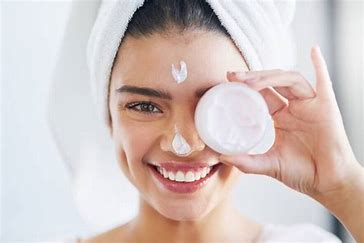

woman's health and Beauty Skin Care
Live healthy life
Healthy skin products
There are a number of over-the-counter (OTC) products available to help keep your skin smooth. Be sure to use products that are right for your skin type for the best results.Scrubs can help slough away dead skin cells that can build up on your skin, causing it to feel rough and look uneven. To exfoliate safely, apply scrub in a slow circular motion using very light pressure, and only exfoliate once a week. AHAs are plant and animal acids used in skin care products. They exfoliate, promote collagen and blood flow, and improve the appearance of wrinkles. They’re also used to treat acne and skin discoloration.recommends washing your face with a gentle, nonabrasive, alcohol-free cleanser in the morning and before bed, as well as after sweating.
Smooth skin home remedies
Honey is a natural exfoliator that also happens to have bioactive properties that may be beneficial in treating a number of skin conditions and reducing the appearance of wrinkles.Coconut oil is an effective moisturizer with anti-inflammatory and antimicrobial properties that may help also treat certain inflammatory skin conditions. Since it may clog pores, it’s best to limit its use to the body.Oatmeal baths can help your skin retain moisture and treat certain skin conditions. You can make your own oatmeal bath or shop for oatmeal baths online, along with other oatmeal skin care products for your face and body.
| country | amount | year |
|---|---|---|
| georgia | 60% | 2012 |
| australia | 80% | 2015 |
| usa | 45% | 2019 |
| country | amount | year |
|---|---|---|
| china | 70% | 2017 |
| brazil | 40% | 2018 |
| canada | 68% | 2022 |